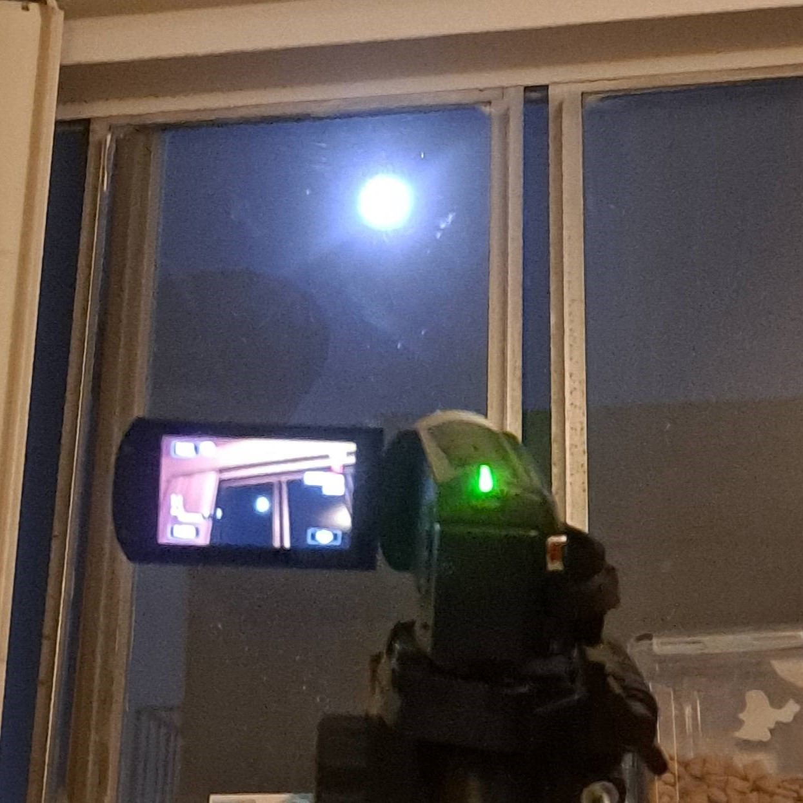

The moon is a tidally locked 2160 mile diameter object that orbits the planet Earth, once every 29.5 days. It has a mass that is greater than 1% Earth, and the only natural satellite Earth has. It is stated to be around 250,000 miles. It is visible from most locations of Earth. It has no atmosphere and the reason is often assumed to be a lack of Geothermal Activity/Solidified Mantle and Core. It is the furthest place where manned missions have gone to so far, and even then, a minimal area of the surface has been explored by humans. The body is one of the reasons earth has tides in its oceans. It is believed to have been created with the collision of Early Earth and a Mars sized planet, causing the rings. Therefore, it should contain similar material concentrations as Earth, and have potential for resource extraction.
The purpose of this page is to collect and post pictures of the moon. Due to limitations, the pictures are not of the highest quality. The pictures are still being posted due to the quality not being the white blob that one is able to photograph using a cell phone from Earth. It is a level between Semi-professional/hobbyist quality photos and the common white object photos that the common cell phone is able to capture. 